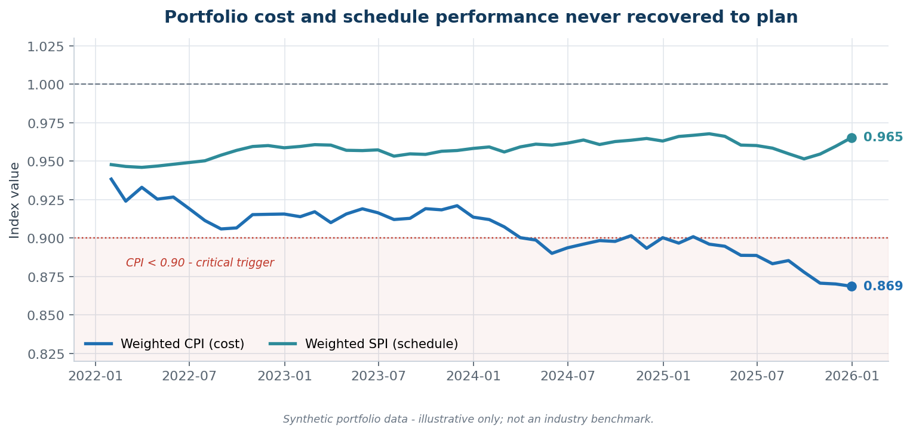
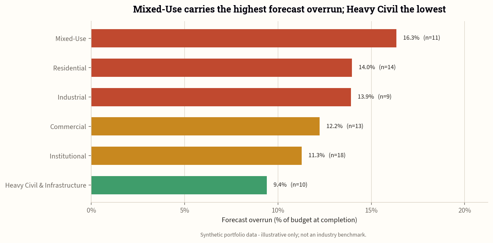
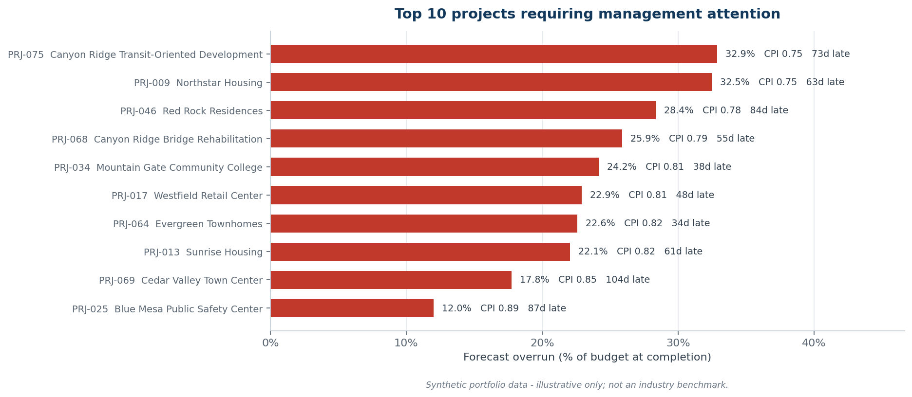
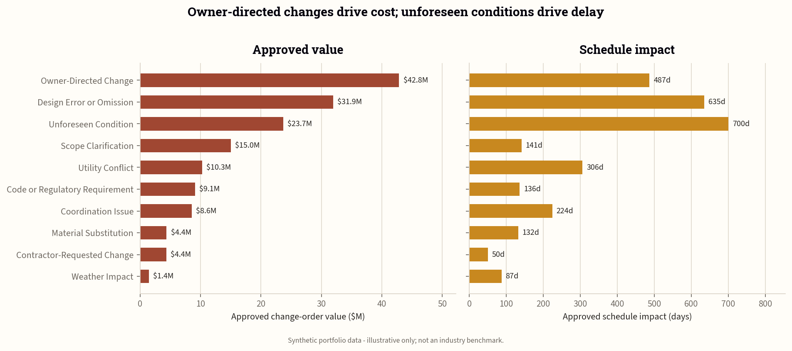
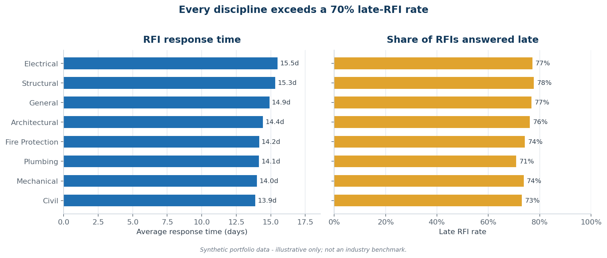

Executive Dashboard
The dashboard follows an executive decision hierarchy: portfolio exposure, projects requiring attention, performance trends, and concise interpretation.




A data-driven early-warning analysis of cost, schedule, change-order, RFI, and contingency performance across a synthetic portfolio of 75 U.S. construction projects.
Construction leaders often review cost reports, schedules, change-order logs, RFI logs, and contingency reports separately. This fragmentation can delay recognition of deteriorating project performance. The business task was to identify which projects were most at risk of exceeding budget or schedule and determine which indicators provided the clearest early warning.
The dashboard follows an executive decision hierarchy: portfolio exposure, projects requiring attention, performance trends, and concise interpretation.



The diagnostic view examines change-order causes, RFI response performance, and the strength of tested analytical relationships.



Weighted CPI was 0.884. Forecast EAC was approximately $6.59 billion, or 13.0% above BAC.
Weighted SPI was close to 1.00, but average forecast delay was 33.7 days. Calendar variance remained essential because SPI can converge at completion.
Contingency burn ratio had a strong positive association with forecast overrun: r = 0.901.
Average RFI response time had a moderate positive association with schedule delay: r = 0.517.
| Rank | Project | CPI | Forecast Overrun | Delay | Status |
|---|---|---|---|---|---|
| 1 | PRJ-075 — Canyon Ridge Transit-Oriented Development | 0.753 | 32.9% | 73 days | Red |
| 2 | PRJ-009 — Northstar Housing | 0.755 | 32.5% | 63 days | Red |
| 3 | PRJ-046 — Red Rock Residences | 0.779 | 28.4% | 84 days | Red |
| 4 | PRJ-068 — Canyon Ridge Bridge Rehabilitation | 0.794 | 25.9% | 55 days | Red |
| 5 | PRJ-034 — Mountain Gate Community College | 0.805 | 24.2% | 38 days | Red |
Defined the business task, stakeholders, performance questions, KPIs, scope, and success criteria.
Designed a four-table synthetic relational dataset covering projects, monthly performance, change orders, and RFIs.
Removed duplicates, standardized fields, repaired documented anomalies, quarantined invalid relationships, and validated 22 quality checks.
Calculated EVM metrics, forecast exposure, delay, contingency burn, change and RFI indicators, segment comparisons, and correlations.
Created an executive dashboard, operational diagnostic view, concise narrative, and accessible portfolio communication package.
The data is synthetic; correlations do not prove causation; EAC uses the simplified BAC/CPI formula; health thresholds are portfolio assumptions; and small group sizes limit some delivery-method and contract comparisons.